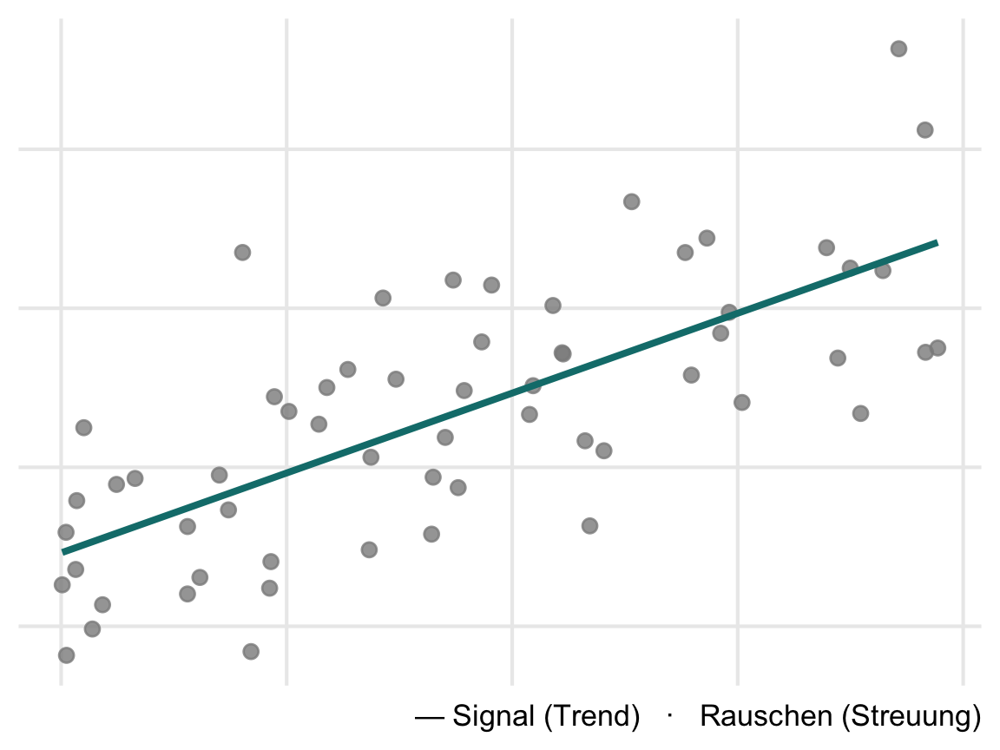

Block 1 — Statistisches Denken & Werkzeuge
Methoden der standardisierten Sozialforschung · BA Pädagogik · KIT · SoSe 2026
Worum es heute geht
- Warum Statistik? — Aus Daten lernen
- Ziele quantitativer Forschung
- Der PPDAC-Zyklus: unser roter Faden
- Methodische Grundbegriffe
- Skalenniveaus
- Unser Datensatz:
lernfoerderung - R & RStudio: Setup und erste Schritte
Warum Statistik?
„Der beste Unterricht ist Frontalunterricht.”
„Mädchen sind sprachbegabt, Jungs mathematisch.”
„Die soziale Herkunft ist entscheidend für den Bildungserfolg von Jugendlichen.”
Glauben oder prüfen?
Aus Daten lernen
Statistik ist keine Formelsammlung, sondern die Kunst, aus Daten über die Welt zu lernen — und gute Schlüsse zu ziehen, wenn nichts sicher ist.
Jede Beobachtung ist eine Mischung aus
- Signal — das Muster, das uns interessiert
- Rauschen — Zufall, Variabilität, Messfehler
Die ganze Kunst: beides trennen.
nach Spiegelhalter, The Art of Statistics
Limitationen von Daten
Daten sind fast immer eine imperfekte Abbildung dessen, das
Alles, was wir messen, unterscheidet sich von Ort zu Ort, von Person zu Person, von Zeit zu Zeit
Wie können wir die bedeutsame Schlussfolgerungen von zufälligen Variabilität trennen?
Ziele quantitativer Forschung
Beschreiben „Über welche fachlichen Kompetenzen verfügen (deutsche) 9.-Klässler:innen in Deutsch?”
Erklären „Was sind Ursachen für geringe Deutschkompetenzen?”
Verändern „Wie lassen sich fachliche Kompetenzen in Deutsch fördern?”
Statistik liefert das Handwerkszeug für alle drei — heute starten wir beim Beschreiben.
Klassische Statistikkurse (Spiegelhalter S.18 f.)
Statistik als ‘Methodenkoffer’ –> mechanische Anwendung von statistischen Tools
Fokus auf zugrundeliegende mathematische Theorie, Auswendiglernen von Formeln –> Vernachlässigung der Gründe, warum man bestimmte Formeln nutzt, und der Herausforderungen, die auftreten, wenn man Daten nutzt um Fragen zu beantworten
Der PPDAC-Zyklus
- Wandel zu problemorientierten Vorgehenssweisen
- Spezifische statistische Methoden nur ein Teil des Untersuchungsprozesses
Statistik als Problemlöseprozess
Statistische Untersuchungen folgen einem Zyklus — nicht „Formel anwenden”, sondern:
| Phase | Leitfrage |
|---|---|
| Problem | Was wollen wir wissen? |
| Plan | Was messen wir, an wem, wie? |
| Data | Daten erheben, aufbereiten, prüfen |
| Analysis | Muster suchen: Tabellen, Grafiken, Kennwerte |
| Conclusion | Was haben wir gelernt? Was bleibt unsicher? |
PPDAC nach Wild & Pfannkuch; bei Spiegelhalter der rote Faden des ganzen Buchs — und unseres Seminars.
PPDAC an einem Beispiel
Eine Schule führt ein Mathe-Lernförderprogramm ein. Wirkt es?
- Problem: Verbessert das Programm die Mathematikleistung?
- Plan: 8.-Klässler:innen zufällig in Förder- und Kontrollgruppe einteilen; Leistung vorher/nachher testen
- Data: Testdaten, Fragebögen, Schulinformationen erheben
- Analysis: Gruppen vergleichen — Grafiken, Mittelwerte, Streuung
- Conclusion: Unterschied gefunden? Signal oder Rauschen?
Genau dieses Szenario begleitet uns als Datensatz durch alle vier Blöcke.
Methodische Grundbegriffe
Population und Stichprobe
Population: Gesamtheit der statistischen Einheiten, für die die zu treffenden Aussagen Gültigkeit besitzen sollen.
Stichprobe: Teilmenge der Population.
Beispiel: Wir untersuchen 200 Achtklässler:innen (Stichprobe) — Aussagen sollen aber für Achtklässler:innen allgemein gelten (Population).
Merkmalsträger und Merkmale
Statistische Einheit (Merkmalsträger): Personen oder Objekte, welche Eigenschaften besitzen, die im Rahmen einer Untersuchung von Interesse sind.
Merkmal: Eigenschaften von Objekten (i.d.R. Personen), i.d.R. erfasst in Variablen.
Merkmale müssen definiert und operationalisiert werden.
Beispiel: „Mathematische Kompetenz” → operationalisiert als Punktzahl in einem standardisierten Test.
UV, AV, Statistik, Parameter
Unabhängige Variable (UV): Häufig auch Prädiktor. Wird systematisch variiert bzw. kontrolliert und bzgl. ihres Einflusses auf die AV untersucht (z.B. Förderprogramm ja/nein).
Abhängige Variable (AV): Häufig auch Kriteriumsvariable. Variable von zentralem Interesse (z.B. Mathematikleistung).
Statistik: Kennwert zur Beschreibung eines Merkmals der Stichprobe.
Parameter: Kennwert zur Beschreibung eines Merkmals der Population.
Variablenarten
Qualitative vs. quantitative Variable: Qualitative Merkmale lassen nur die Aussage gleich vs. ungleich zu, während bei quantitativen Variablen auch Vergleiche in Bezug auf die Größe möglich sind.
Manifeste Variable: direkt beobachtbare oder messbare Merkmale (z.B. Lösung einer Aufgabe).
Latente Variable: theoretisch postulierte Merkmale, die durch manifeste Variablen indirekt oder vereinfacht gemessen werden (z.B. Intelligenz, Lernmotivation).
Wiederholung als Memory
Messtheoretische Grundlagen
Warum Skalenniveaus?
Zahlen sind nicht gleich Zahlen:
- Trikotnummer 10 — ist Spielerin 10 „doppelt so gut” wie Spielerin 5?
- Schulnote 2 — ist der Abstand zur 1 genauso groß wie der von 4 zu 3?
- Testwert 80 Punkte — hier dürfen wir rechnen: Differenzen sind interpretierbar.
Das Skalenniveau einer Variablen legt fest, welche Aussagen über die Werte bedeutsam sind — und damit, welche Statistiken wir später überhaupt berechnen dürfen.
Nominalskala
Zahlen kennzeichnen nur Gleichheit vs. Verschiedenheit — sie sind reine Etiketten.
- Geschlecht (1 = weiblich, 2 = männlich, 3 = divers)
- Schule (1 = Schule A, 2 = Schule B, …)
- Gruppenzugehörigkeit (0 = Kontrolle, 1 = Förderung)
Zulässige Aussage: „Kim und Alex besuchen verschiedene Schulen.”
Nicht zulässig: jede Aussage über Reihenfolge oder Abstände — die Codierung ist beliebig austauschbar.
Ordinalskala
Zahlen bilden zusätzlich eine Rangordnung ab — Abstände sind aber nicht interpretierbar.
- Schulnoten (1–6)
- Likert-Antworten („stimme gar nicht zu” … „stimme voll zu”)
- Bildungsabschlüsse (Hauptschule < Realschule < Abitur)
Zulässige Aussage: „Kim hat eine bessere Note als Alex.”
Nicht zulässig: „Der Abstand zwischen Note 1 und 2 ist gleich groß wie zwischen 4 und 5.”
Intervallskala
Zusätzlich sind Differenzen interpretierbar — gleiche Zahlabstände bedeuten gleiche Merkmalsunterschiede. Es gibt aber keinen natürlichen Nullpunkt.
- Temperatur in °C
- standardisierte Testwerte (z.B. IQ, Kompetenztests)
Zulässige Aussage: „Kim hat sich um 10 Punkte mehr verbessert als Alex.”
Nicht zulässig: „Kim ist doppelt so kompetent wie Alex” — Verhältnisse sind ohne echten Nullpunkt nicht bedeutsam.
Verhältnisskala
Zusätzlich gibt es einen natürlichen Nullpunkt — auch Verhältnisse sind interpretierbar.
- Reaktionszeit in Sekunden
- Alter, Körpergröße
- Anzahl Fehltage (genau genommen: Absolutskala — Zählvariablen mit natürlicher Einheit)
Zulässige Aussage: „Alex hat doppelt so viele Fehltage wie Kim.”
Überblick: Welche Aussagen sind bedeutsam?
| Skalenniveau | gleich/verschieden | Ordnung | Differenzen | Verhältnisse |
|---|---|---|---|---|
| Nominal | ✓ | — | — | — |
| Ordinal | ✓ | ✓ | — | — |
| Intervall | ✓ | ✓ | ✓ | — |
| Verhältnis | ✓ | ✓ | ✓ | ✓ |
Intervall- und verhältnisskalierte Variablen fasst man als metrisch (kardinalskaliert) zusammen.
Merkregel: Je höher das Niveau, desto mehr Information — und desto mehr dürfen wir rechnen.
Skalenniveaus als Spiel
Unser Datensatz: lernfoerderung
Das Szenario
Eine (fiktive) Evaluation: 200 Achtklässler:innen aus 8 Schulen, zufällig zugewiesen zu einem zusätzlichen Mathe-Lernförderprogramm oder einer Kontrollgruppe.
- Mathematikleistung wurde vor und nach dem Programm getestet
- zusätzlich: Lernmotivation, Mathenote, soziale Herkunft, Fehltage
Dieser Datensatz begleitet uns durch alle vier Blöcke — von der ersten Häufigkeitstabelle (Block 2) bis zum Gruppenvergleich (Block 4).
Die Variablen — und ihr Skalenniveau?
| Variable | Inhalt | Skalenniveau? |
|---|---|---|
schule |
Schule A–H | ? |
gruppe |
Förderung / Kontrolle | ? |
motivation |
Lernmotivation (1–5, Likert) | ? |
note_mathe |
letzte Zeugnisnote (1–6) | ? |
ses |
soziale Herkunft (niedrig/mittel/hoch) | ? |
mathe_pre |
Testwert vor dem Programm | ? |
mathe_post |
Testwert nach dem Programm | ? |
fehltage |
Anzahl Fehltage | ? |
Eure Aufgabe: Ordnet jeder Variable ihr Skalenniveau zu — Begründung in einem Satz.
R & RStudio
Warum R?
- kostenlos & Open Source — läuft auf jedem Rechner, auch nach dem Studium
- Standard in der empirischen Bildungs- und Sozialforschung
- reproduzierbar: Ein Skript dokumentiert jeden Analyseschritt — kein Klick geht verloren
- Unser Anspruch: Ihr könnt vorgegebene Skripte ausführen, lesen und anpassen — ihr müsst keine Programme von Grund auf schreiben
R und RStudio
R ist die Sprache — RStudio die Arbeitsumgebung drumherum.
Vier Bereiche in RStudio:
| Bereich | Funktion |
|---|---|
| Skript (oben links) | Hier steht euer Code — speicherbar, wiederverwendbar |
| Konsole (unten links) | Hier wird Code ausgeführt, hier erscheinen Ergebnisse |
| Environment (oben rechts) | Welche Objekte/Daten sind gerade geladen? |
| Files/Plots/Help (unten rechts) | Dateien, Grafiken, Hilfeseiten |
Erste Schritte: R als Taschenrechner
Mit <- weisen wir Werte einem Objekt zu:
Erste Schritte: Funktionen
Funktionen haben die Form name(eingabe):
Was mean() genau berechnet und wann es sinnvoll ist (Stichwort: Skalenniveau!) — das ist Thema von Block 2.
Bis zum nächsten Block: Setup
- R installieren: cran.r-project.org
- RStudio installieren: posit.co/download/rstudio-desktop
- RStudio öffnen, in die Konsole tippen:
Wenn 2 erscheint: fertig. Bei Problemen → Forum auf ILIAS, wir lösen das vor Block 2.
Eine bebilderte Schritt-für-Schritt-Anleitung findet ihr auf der Seminarseite.
Übung 1 (Studienleistung)
Auf ILIAS bis Mittwoch vor Block 2:
- Skalenniveaus: Ordnet den 8 Variablen des
lernfoerderung-Datensatzes ihr Skalenniveau zu — mit je einem Satz Begründung. - Reflexion: Welche der drei Behauptungen vom Seminarbeginn hat euch am meisten zum Nachdenken gebracht — und wie müsste eine Untersuchung aussehen (PPDAC!), um sie zu prüfen? (max. ½ Seite)
- Setup-Nachweis: Screenshot eurer RStudio-Oberfläche mit dem Ergebnis von
1 + 1.
Ausblick: Block 2
Morgen wird es konkret — wir laden lernfoerderung in R und beschreiben die Daten:
- Häufigkeitstabellen und Balkendiagramme
- Lagemaße: Modus, Median, Mittelwert
- Streuungsmaße: Spannweite, Varianz, Standardabweichung
- alles direkt in R — Skripte werden gestellt
Literatur
- Spiegelhalter, D. (2019). The Art of Statistics: Learning from Data. — Kap. 1 (Einführung, PPDAC)
- Eid, M., Gollwitzer, M. & Schmitt, M. (2017). Statistik und Forschungsmethoden (5. Aufl.). — Kap. 4.1 (Grundbegriffe), Kap. 5.1 (Skalenniveaus)
Beide Texte als Auszüge auf ILIAS — zur Vertiefung, nicht als Pflichtlektüre vor dem Block.